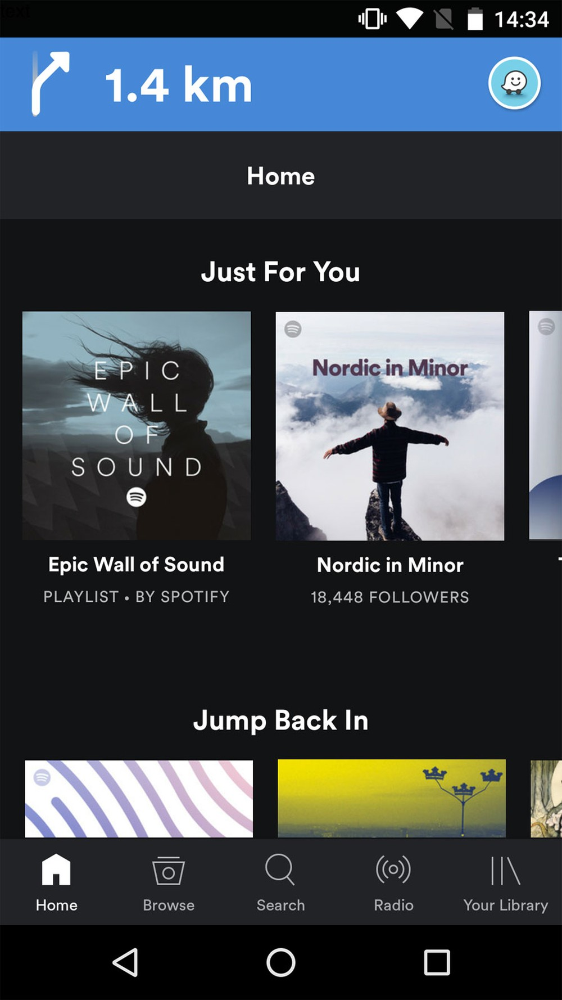
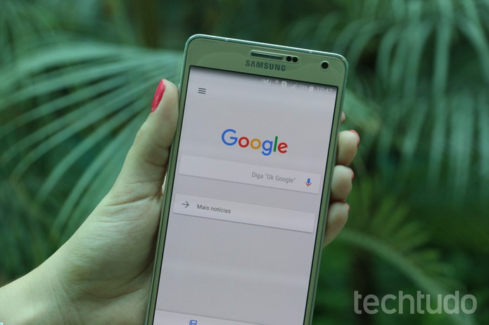

Tá na hora de ficar saudável! 5 apps que vão ajudar você nessa tarefa
Postado em 02 de Abril 2016Se você está aqui, provavelmente se lembra daquela promessa que fez na virada do ano: "Em 2017, vou fazer mais exercícios e ficar mais saudável". Bem, sabemos que 99,9% das pessoas que dizem isso — conta baseada na fonte chamada "vida" — não cumprem o prometido, então estamos aqui para dar uma mãozinha com os melhores aplicativos para você mexer esse corpo. Nos primórdios dos smartphones, as aplicações voltadas para a saúde eram escassas. Além disso, a interface de usuário nunca era responsiva e bonita o suficiente para reter os usuários. Agora, em pleno 2017, alguns apps evoluíram bastante — alguns deles até contam com sistemas de inteligência artificial e machine learning. Você pode ter um smartphone Android, iOS ou Windows Phone: não importa. Chegou a hora de levantar a bunda da cadeira, camarada. Role a página para conhecer os aplicativos.
Postado por Esterlina genyWaze com Spotify: Parceria entre apps permite trocar de música enquanto se planeja a próxima viagem
Postado em 12 de Dezembro 2016
O aplicativo de navegação Waze agora consegue tocar as músicas salvas no seu smartphone. E o aplicativo de streaming Spotify já pode dar início à rota até seu próximo destino. Os dois apps anunciaram uma parceria nesta terça-feira (14) para integrar os serviços e facilitar a mudança de um para o outro. Os novos recursos começam a ser disponibilizados nesta terça primeiro, e aos poucos, para aparelhos com sistema operacional Android. Não há informações sobre a versão para iOS. Segundo as empresas, a parceria permite aos usuários: Iniciar uma navegação via Waze de dentro do Spotify; Acessar suas listas de músicas do Spotify pelo Waze; Alternar entre os aplicativos com um toque, e trocar de faixas também, mas só quando o carro estiver totalmente parado. Essa não é a primeira integração do Spotify com outros serviços. O aplicativo de streaming de músicas pode ser usado em conjunto com apps de encontros, como Tinder e Happn, de transporte, como o Uber, e até de organização de fluxo de trabalho, como o Slack.
Postado por Esterlina genyAndroid: como desativar a busca automática por conteúdo de apps
Postado em 12 de Dezembro 2016
O aplicativo do Google para Android mostra, nos resultados de busca, o conteúdo de alguns aplicativos, como mensagens SMS, arquivos armazenados no Google Drive e e-mails do Gmail. O recurso é útil para localizar rapidamente um favorito do Chrome ou contato da agenda, por exemplo, mas pode comprometer a sua privacidade. Se você não quer que os seus arquivos pessoais, mensagens e outras informações sejam exibidos nas buscas realizadas no celular Android, siga o passo a passo abaixo. Neste tutorial, aprenda a desativar a busca automática em apps do Google.
Postado por Esterlina geny